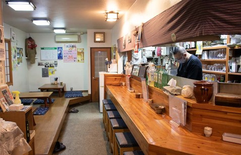
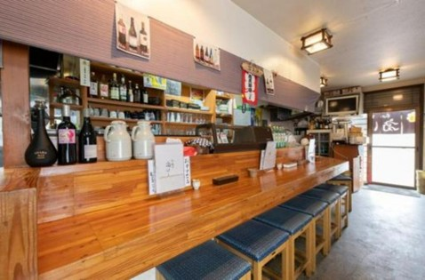
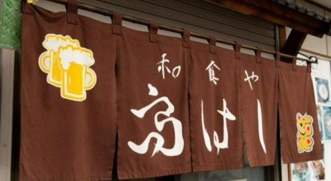
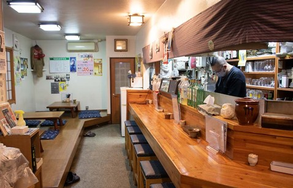
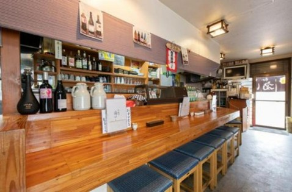
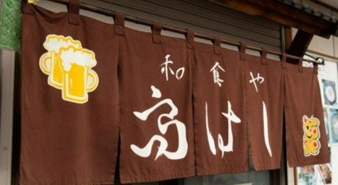

紹介
旭川駅から車で15分の距離にある和食や高はし。
バス通りに面している小さなお店です。家庭料理を中心とした居酒屋メニューを提供しています。
以前は中心部パリ街で「和食高はし」として和食を基本に創作料理を提供。
店主の想像力が衰えを感じ始め閉店しましたが、
修行で新たな創造性を身につけ旭川の地で出店。
旬の素材を創作性でひと手間ふた手間かけた料理は逸品。
本格的な和食ながらお手頃の価格でお楽しみいただけます。


 




